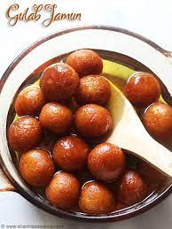

Gulab jamun

Gulab jamun is an Indian dish. It is a delicacy served on special occassions or as a desert.
INGREDIENTS
- Gulab Jamun Mix from the supermarket
- sugar
- water
METHOD OF PREPARATION
Gulab Jamun
- Put the mix in a bowl and add quarter glass of water
- Knead the mix into smooth dough
- Prepare small balls from the dough
- Put the small dough balls in a frying pan and fry them in medium heat
- Fry the balls until golden brown
Sugar Syrup
- Put a cup of sugar in a pan and add a quarter glass of water
- Heat them in a medium heat
- Add Cardamamon for scent
- Turn the heat off after the sugar has completely melted
Final touches
- Put the fried gulab jamun in a bowl and add the sugar syrup
- Put the bowl aside for sometime
- Enjoy your sugar soaked gulab jamun